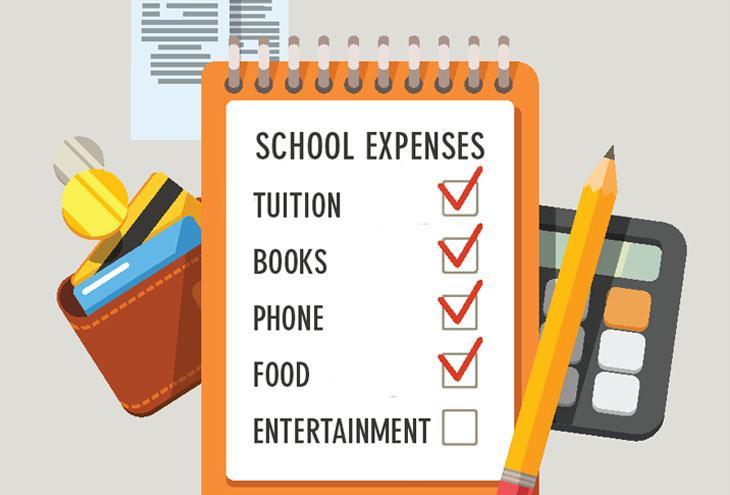

Every child has the right to learn, but at the moment, education in North America is inefficient, and does not always reach the general population.
Affordability and access is a large problem in the countries due to lack of funds or interest in education. Increasing the number of students per classroom will allow for less spending in staff and students,as well as space required in schools. Reducing the sizes of schools would drastically decrease the expenses of building, and money can be spent on supporting those who are unable to attend schooling otherwise.
Along with increasing class sizes, people with mental disabilities can be included in normal classes. Studies have shown that integrating disabled students can help them to progress faster in learning, while also educating others on accepting those with disabilities.
Another way to address the education problems in North America is to support the poorer communities and help them to understand the importance of schooling.  Helping less fortunate families financially can help students focus on education rather than helping their family stay afloat. By relieving students of financial stress, they can access schooling without worry of employment.
Helping less fortunate families financially can help students focus on education rather than helping their family stay afloat. By relieving students of financial stress, they can access schooling without worry of employment.
Cheaper technology like chromebooks can also be purchased and loaned to families at a discounted price so that students can also attend school through online means.
Slowly transitioning to online schooling will also eventually result in a reduced amount of money required for basic supplies like pencils, paper and calculators.